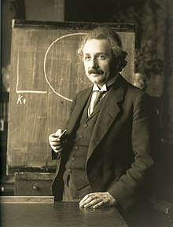

Albert Einstein (1879–1955) was a theoretical physicist and one of the most influential scientists in history. Here are some key points about his life and contributions:
Einstein never fully accepted quantum mechanics. While he recognized that it made correct predictions, he believed a more fundamental description of nature must be possible. Over the years he presented multiple arguments to this effect, but the one he preferred most dated to a debate with Bohr in 1930. Einstein suggested a thought experiment in which two objects are allowed to interact and then moved apart a great distance from each other. The quantum-mechanical description of the two objects is a mathematical entity known as a wavefunction. If the wavefunction that describes the two objects before their interaction is given, then the Schrödinger equation provides the wavefunction that describes them after their interaction. But because of what would later be called quantum entanglement, measuring one object would lead to an instantaneous change of the wavefunction describing the other object, no matter how far away it is. Moreover, the choice of which measurement to perform upon the first object would affect what wavefunction could result for the second object. Einstein reasoned that no influence could propagate from the first object to the second instantaneously fast. Indeed, he argued, physics depends on being able to tell one thing apart from another, and such instantaneous influences would call that into question. Because the true "physical condition" of the second object could not be immediately altered by an action done to the first, Einstein concluded, the wavefunction could not be that true physical condition, only an incomplete description of it. More Information